The year's best music
Tulsa artists and tastemakers pick their favorite albums of 2016

We’ve once again called on Tulsa artists and tastemakers to pick the album that defined their year. The choices are varied and sometimes surprising, but the triumphant return of A Tribe Called Quest in the wake of Phife Dawg’s passing stood out to three of our contributors, besting Beyonce and Bowie as the closest thing to a consensus favorite in a music-rich year.
Compiled by Ty Clark, Mary Noble, Bobby Dean Orcutt, Damion Shade
We Got It from Here...Thank You 4 Your Service
A Tribe Called Quest
As a Tribe fan, I’ve been hoping they would put out another project for a long time. Yes, it was bittersweet hearing it after the death of Phife Dawg. However, I love the way they paid tribute to him recently on SNL. A couple of tracks on the album change so drastically that it’s like you are getting two songs in one. I love it because it forces you to think about improving yourself and the world around you. I love it because it’s TRIBE, yo. ATCQ will always be my ish. Ali Shaw, DJ, KJAMS 105.3
.jpg) My love affair with hip-hop that evolved into a passion began with A Tribe Called Quest. This album is everything I wanted it to be and more. It serves as a much deserved anthem to Phife, it unabashedly addresses racism in America and materialism in mainstream hip-hop, all while staying true to their roots and original sound. Mary Noble, TTV music writer
My love affair with hip-hop that evolved into a passion began with A Tribe Called Quest. This album is everything I wanted it to be and more. It serves as a much deserved anthem to Phife, it unabashedly addresses racism in America and materialism in mainstream hip-hop, all while staying true to their roots and original sound. Mary Noble, TTV music writer
Folk music is not white. It’s a music of the people, for the people with a voice of dissent. It questions authority and shines light on real struggles that did not die with Woody Guthrie. If this record isn’t that, nothing is. Intelligent lyrics meet engaging beats, leaving you with a record that flows like a great movie, the kind where you catch something new on each play. Incredible hip-hop record that’s really an incredible folk record. Bobby Dean Orcutt, TTV music writer
 It's Immaterial
It's Immaterial
Black Marbles
 Black Marbles’ latest record, It’s Immaterial, is a nice step forward from their last album. Its gothy, catchy hooks should be welcoming to anyone looking for a subtle pop banger. I wore their first album out as my go-to cycling record and totally can’t wait to put some miles on this one. Clay Flores, Lizard Police
Black Marbles’ latest record, It’s Immaterial, is a nice step forward from their last album. Its gothy, catchy hooks should be welcoming to anyone looking for a subtle pop banger. I wore their first album out as my go-to cycling record and totally can’t wait to put some miles on this one. Clay Flores, Lizard Police
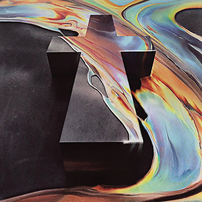Woman
Justice
It’s got a little bit of everything! Favorite track is “Heavy Metal,” which starts out with a creepy vibe, then changes into kind of an epic track. Definitely give it a listen if you enjoy electronic music. It’s got a bit of everything from disco vibes, house feels and some with an 80’s feel. I love this entire album! Kylie Wells, aka DJ Kylie
 Masterpiece
Masterpiece
Big Thief
 This was one of the records to truly floor me in 2016. Broke my heart into all kinds of pieces. Adrianne Lenker’s voice has its own gravity and her lyrics tear at your emotions like claws. There is actual poetry in some of these songs. It’s so beautiful and lively and sad. Somehow this band turns these gentle folk songs into a torrent of rock and roll. Damion Shade, TTV music writer
This was one of the records to truly floor me in 2016. Broke my heart into all kinds of pieces. Adrianne Lenker’s voice has its own gravity and her lyrics tear at your emotions like claws. There is actual poetry in some of these songs. It’s so beautiful and lively and sad. Somehow this band turns these gentle folk songs into a torrent of rock and roll. Damion Shade, TTV music writer
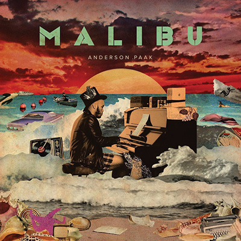Malibu
Anderson .Paak
It’s barely 2016, but Malibu by Anderson .Paak. It’s hip-hop, soul, funk; it’s love. The grooves are insatiable and the arrangements are on point. It’s my go-to album to feel good on a crummy day and feel extra good on a good day. Kristin Ruyle, Count Tutu
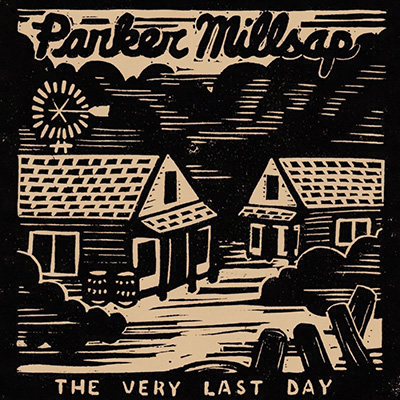The Very Last Day
Parker Millsap
From “Hades Please” to the shiver worthy “Heaven Sent,” this record is as fun as it is poignant. He wails like an old gospel singer, but he’s preaching his personal truth, and you don’t have to speak in tongues to believe it. The title track nails the Bible Belt’s apocalypse obsession to the proverbial cross. Forget about weeping and gnashing your teeth, unless you still haven’t listened to this album. Erin O’Dowd, singer/songwriter
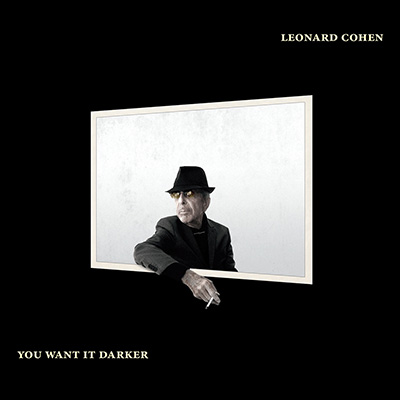You Want it Darker
Leonard Cohen
It would have been my favorite whether or not he passed away shortly after releasing it. Cohen kept growing the whole time and this record is proof. He had a way of staring things right in the face until they gave up the spirit, then catching that spirit and spinning it into simple, honest-to-god art truth songs. Thanks Leonard. I do want it darker. Parker Millsap, singer/songwriter
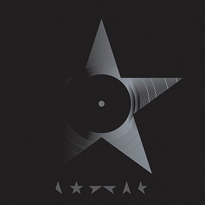Blackstar
David Bowie
Oddly enough, it’s not a record that I play on repeat over and over like most my favorites. I can beat around the feeling but can’t quite place it; the beginning of the record I feel a little anxious, maybe even a little scared and then by the end I’m left with hope and an almost nostalgic feeling. It’s unlike anything I’ve ever experienced! The album is a masterpiece, and possibly one of my all time favorites! Desi Roses-Clinton, Desi and Cody
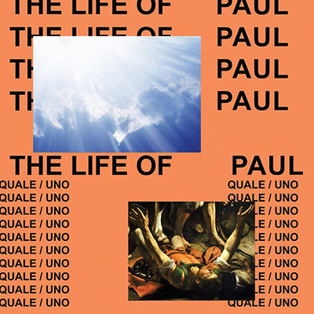The Life of Paul
This fan edit of Kanye West’s The Life of Pablo is my favorite album of 2016. There is something to be said about an album that inspires somebody to collect every artifact of the final product and dedicate their time and resources to tastefully create a version that is three times longer (56 edits) to share with other fans while knowing copyright laws would likely result in it quickly being removed from the internet. Dillon Hargrave, The Phoenix Bros.
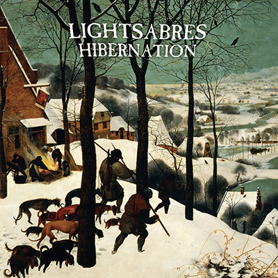Hibernation
Lightsabres
 Upon the first listen it sounds familiar. With more spins, the album begins to show its roots in all things 90s alternative, both radio and underground. Many of my favorite bands come to mind when listening—Smashing Pumpkins, My Bloody Valentine, The Cure. There are some great riffs here, and the vocal melodies are what really seal the deal. Calvin Compton, Starship Records & Tapes
Upon the first listen it sounds familiar. With more spins, the album begins to show its roots in all things 90s alternative, both radio and underground. Many of my favorite bands come to mind when listening—Smashing Pumpkins, My Bloody Valentine, The Cure. There are some great riffs here, and the vocal melodies are what really seal the deal. Calvin Compton, Starship Records & Tapes
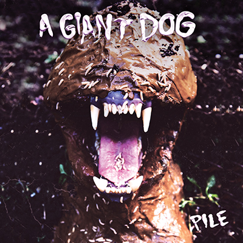Pile
A Giant Dog
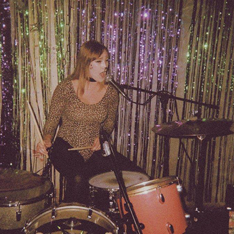I saw the band in a basement in Tulsa when I was 19 and followed them ever since. Their live shows are nothing less than exciting and their records are the same. When I listened to it for the first time it was on repeat for a few days at least! If you dig rock-n-roll, wailing vocals, and insanely catchy harmonies, this album is for you. Amelia Pullen, Dead Shakes
 Chill
Chill
Surron The 7th
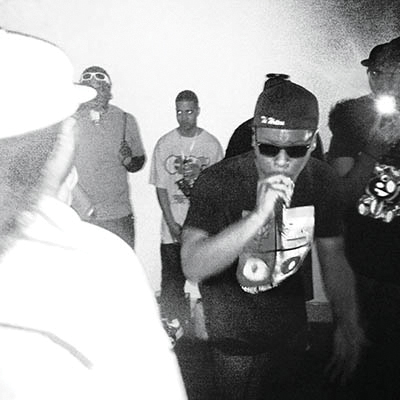The album may be called Chill, but he brings some heat with this one. It puts you in a state of relaxation while at the same time goin’ over and across ya head with intricate wordplay and some heavy-handed punchlines. And all the tracks to back his crazy rhymes are just as ill. Don’t sleep on this guy’s work. He’s one of best rappers around, and not just around Tulsa. Mike Dee, emcee
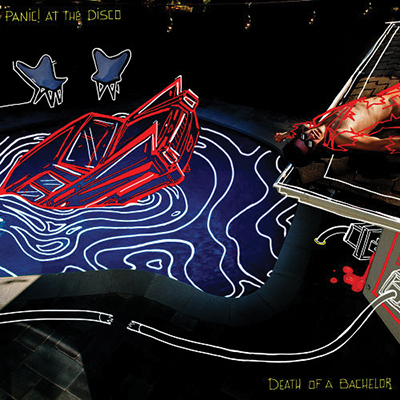Death Of A Bachelor
Panic! At The Disco
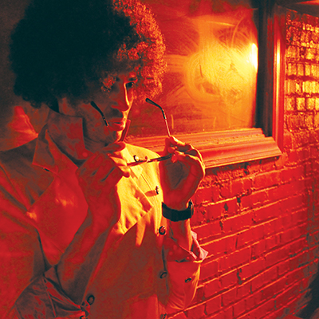It is one of the most creative and passionate albums I have heard in a long time. It seamlessly blends multiple genres from rock, trap and even big band jazz to create a unique and odd pop album without alienating the listener. Brendan’s vocals are always crisp and on point. His range, vocal styling/layering help warp the already astounding tracks into an epic pop symphony. JANKINS, emcee
 Blue Rider Songs
Blue Rider Songs
Scott Hirsch
This is a splendid example of the influence Tulsa music has had on folks all over these States. Rock-solid, yet stripped-down rhythm sections, tremolo-ridden and reverb-drenched guitars, and smooth, dark melodies inhabit this entire record. Clever wordplay and Cale references accompanied by clear, beautiful arrangements. By far, this is my favorite record of the year. John Calvin Abney, singer/songwriter
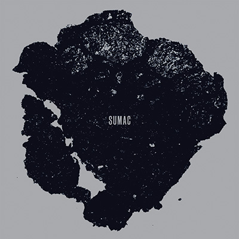What One Becomes
SUMAC
 There’s a lot of predictable and generic music within the sludge and doom genres. Sumac might be considered post-metal, but it takes the best elements of the other genres and does them better. What One Becomes creates a refreshingly grim landscape where a relentless beat performs a gradual erosion punctuated by moments of chaos. It is well recorded, with a production that feels huge without drowning in so much reverb that it loses power. James Plumlee, Senior Fellows
There’s a lot of predictable and generic music within the sludge and doom genres. Sumac might be considered post-metal, but it takes the best elements of the other genres and does them better. What One Becomes creates a refreshingly grim landscape where a relentless beat performs a gradual erosion punctuated by moments of chaos. It is well recorded, with a production that feels huge without drowning in so much reverb that it loses power. James Plumlee, Senior Fellows
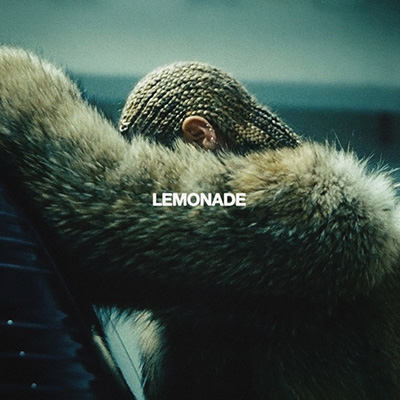Lemonade
Beyonce
Lemonade has to be my most influential album of 2016. It has to be the most inspiring to me as a woman. Being raised with five sisters and a single mother, I related to its many stages of any relationship, heartbreak, healing and just flat out feminism and power. She painted her story so beautifully. The poetry and empowering lyrics gave me chills at times. I love how she has grown with each album she has made and it’s like BAM, in your face. Faye Moffett (formerly Brandee), singer/songwriter
 The Irrepassable Gate
The Irrepassable Gate
Ash Borer
2016 has subjectively been one of the worst years for pop culture, politics, and prolonged hope for any semblance of a silver lining. Ash Borer’s long-awaited third LP helps usher in the mounting despair and hopelessness we can all come to expect in our collective future. Atmospheric ambience textured with cascadian riffs and blindingly fast blast beats create the perfect soundtrack for the death of all dreams, great and small. Jay Hancock, Holy Mountain Music & Oddities
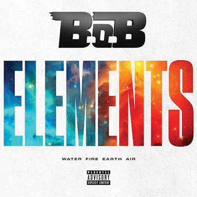Elements
B.O.B.
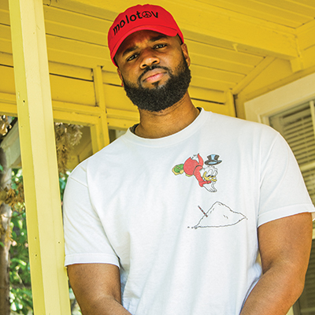I would’ve never guessed that B.O.B. could make an album that I would even almost consider a favorite but with that said, Elements is definitely my favorite album of the year. I’m a huge fan of documentaries. I enjoy learning new things. I love hip-hop and on occasion I indulge in ratchet activities. This album embodies all of those elements (pun intended). Definitely going in the collection. Stays on repeat. Surron the 7th, emcee
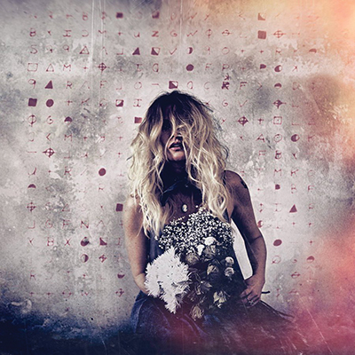Exodus of Venus
Elizabeth Cook
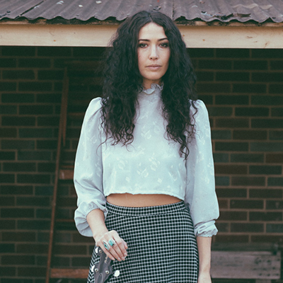A modern classic. I think it is the best thing to come out of Nashville in years. There is a heavy gospel and old school country influence, but the record is refreshing, modern, emotional, and powerful. Cook’s songwriting is so personal and relatable, and her voice is haunting and sweet, one of the best in the music business. Pick this up if you haven’t heard it yet, it’s a total masterpiece. Lauren Barth, singer/songwriter
.jpg) Double Vanity
Double Vanity
BRONCHO
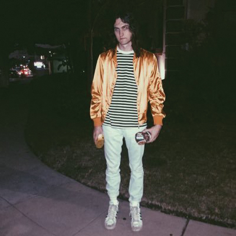We just got off a tour with them. I loved the album before, but seeing them perform it every night really piled on the weight for me. The vocal melodies, the harmonies, the sludge... it all hits me in the gut pretty hard, emotionally. You don’t even have to understand the lyrics to feel it, but it makes you sad in a really happy way. We’re good friends and I act cool around them, but really I think they’re brilliant. Cale Chronister, Sports
 Post Pop Depression
Post Pop Depression
Iggy Pop
 The best records have always given me chills and made me laugh out of sheer joy. We were on tour at the time when I first heard it entirely. Sitting in the back seat, I went to that place inside myself where time was forgotten, there was no pain and auditory ecstasy was the only thing I felt. I was hooked and 2016 never produced another record quite as joyful as this one. Ty Clark, TTV music writer
The best records have always given me chills and made me laugh out of sheer joy. We were on tour at the time when I first heard it entirely. Sitting in the back seat, I went to that place inside myself where time was forgotten, there was no pain and auditory ecstasy was the only thing I felt. I was hooked and 2016 never produced another record quite as joyful as this one. Ty Clark, TTV music writer
See the picks for 2015’s best albums here.
.jpg)
.jpg)